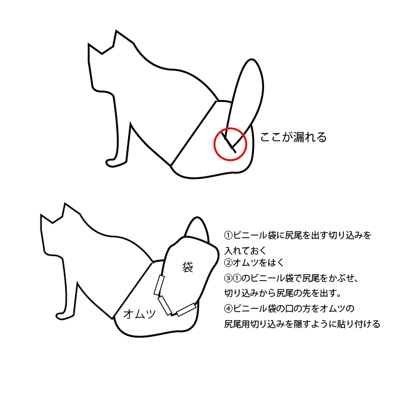

腎臓病の猫と上手に付き合う
何が1番大切か
病気の猫を飼うということは、たくさんの悩みを生みます。
少しでも長く生きていてほしい、そう思うのは皆さん同じだと思います。
しかし、治療が進むと、嫌がる猫の口に薬を入れて内服させたり、点滴や注射を繰り返したりと、猫にとって幸せなのか分からなくなる時があります。
その狭間で飼い主は苦しむことがあるかもしれません。きっとそこに正解はないでしょう。
ベアの介護をする中でも、経済的、精神的なストレスで、夫婦喧嘩をしたことも何度もあります。
その姿をベアはどんな気持ちで見ていたでしょうか。
私たちにとって、猫にとって一番何が大切か、難しい問題にいずれ答えを出さなければいけません。
飼い主のストレス管理も大切！
飼い主にとって、猫にとってより良い介護をするためには、ストレス管理をすることが大事だと思います。
もちろんそれは簡単なことではありません。ただ、ベアは甘えん坊な猫だったので、介護に疲れベアを撫でなくなったり、抱っこしなくなることは一番かわいそうなことだと思いました。
そのためいくつか工夫したことを紹介したいと思います。
食べたいものを食べさせる！
記事を読む猫と腎臓病のページでも書きましたが、腎臓病の猫にとって食事療法が有効だと言われています。
しかし、腎臓病が進むにつれ食欲がなくなり、いくら腎臓に良い食べ物を上げても、食べなくなってしまいます。療法食は通常のキャットフードより価格も高いです。
「なんで食べないんだ！」とストレスに感じることもあるかもしれません。ですが、きっと食べられないものは食べられないんです。気持ち悪くて吐きそうなとき、私たちも食事は摂れません。
どうしても食べられなくなった来た時、「食べないよりは、身体に悪くても食べた方がいい」とお医者さんにも言われ、腎臓食ではないものを上げることにしました。
中には食べられるものもあったり、少しは手を付けてくれたり、変化が見えると、私たちも張り切っていろいろなご飯をあげることができました。「これをどうにか食べさせないと...」という気持ちから解放され楽になったのを覚えています。
ちなみに、ベアは「和の極み 腎臓サポート」は腎臓サポートと書いてある中でも長い期間食べてくれました。愛猫の好きな味やにおいによって食べてくれるものは変わると思いますので、色々試してみるのが良いと思います。
トイレが難しくなった時の裏技！
記事を読む
腎臓病に関わらず、終末期を迎えた猫は、トイレで排泄をするのが難しくなる場合があります。
ベアも最後はトイレに間に合わずうんちが漏れてしまうことが多くなりました。しかし、甘えん坊のベアは私たちの布団で寝たがります。
正直、毎回シーツを汚されるとなかなか辛いものがあります...。
そこで、市販で売っている猫用のオムツを購入し、装着しました。これで安心！とホッとしていた私たちでしたが、そう簡単にこの問題は終わりませんでした。
長毛だったためか、尻尾を通す穴からうんちが漏れてしまったのです。特に病気の影響もありうんちが緩く水っぽかったため漏れてしまったのだと思います。
でも、できることならなるべくそばにいてやりたいと思った私たちは、試行錯誤の末、オムツを改造することで解決することができたのです！
これのおかげで、最後まで一緒に寝かせてあげることができました。そんなに難しくないのでぜひ試してみてください！
ただ...見た目はかなり悪いです...。
※尻尾の形状、種類などによってできない場合があります。完全に失禁を防げるわけではないので参考までにとどめておいてください。

優先順位を決める！
記事を読む
これは結局のところ難しい決断ですが、何を大切にするかを決めることです。
私たちは、薬の内服も点滴も最後の方まで続けましたが、優先順位としては、ベアをかわいがることを優先にしました。
ベアが嫌がることを(点滴、内服など)したら、必ず撫でてあげたり、なるべく一緒にいれるようにしました。
通院もストレスになるので、点滴などは自宅で行いました。(先生に相談してください。)
ベアは散歩が好きで、亡くなる最後の日も散歩に行きたがりました。歩けない足で歩き玄関で待っていたので、最後の日も外に連れていき一緒に外の風に当たりました。
きっとどんな対応をしたとしても、亡くなった後は、「もっとこうすればよかったな」と思うと思います。
でも、「ちゃんと大切にしたな」、と思えることは、自己満足だとしても大切なことだと思うのです。